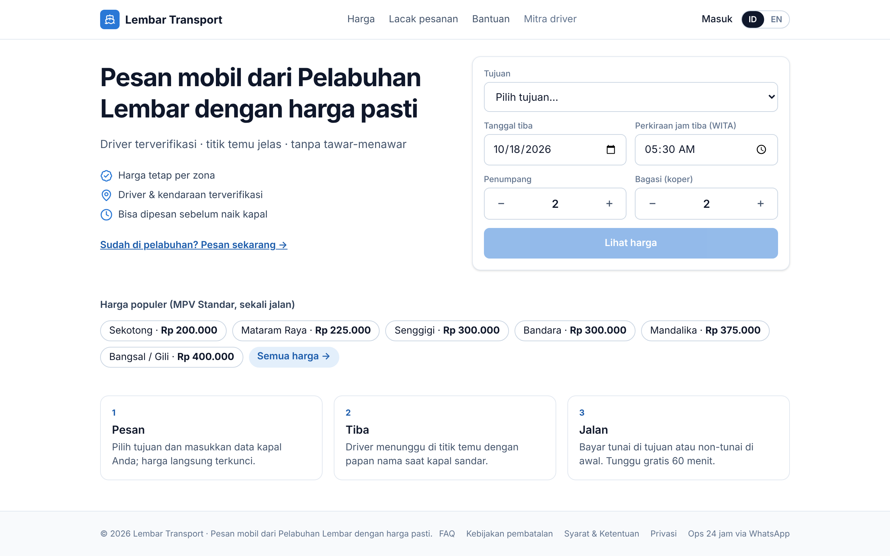
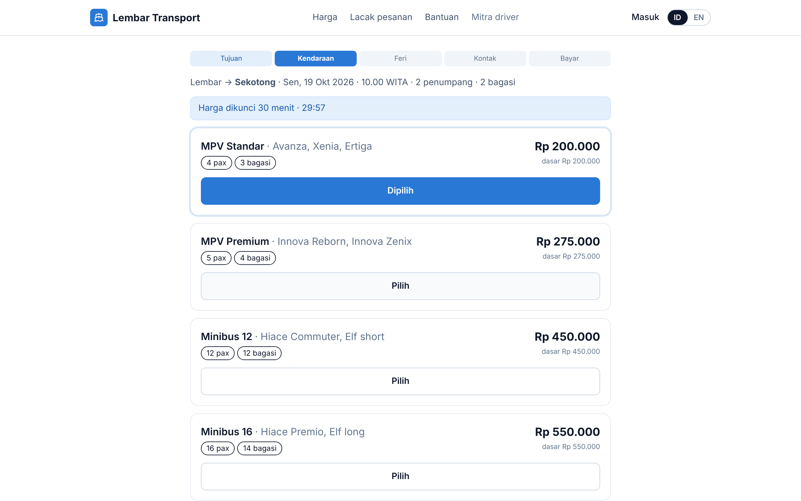
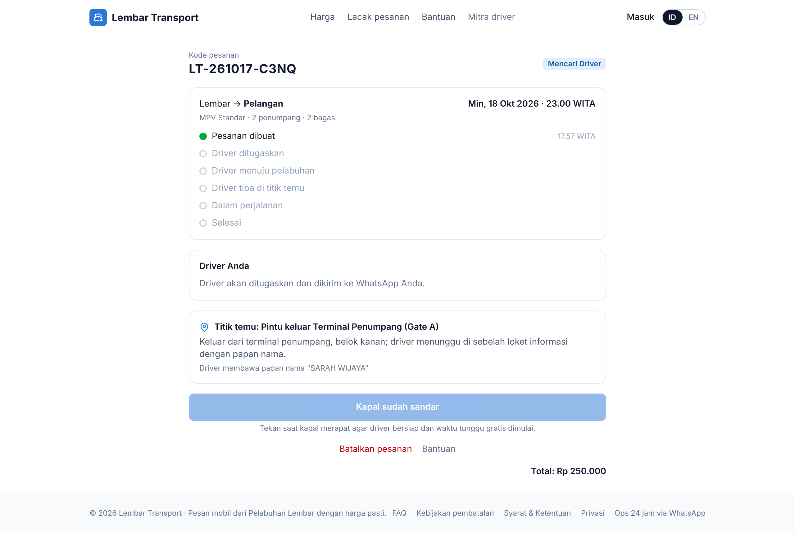
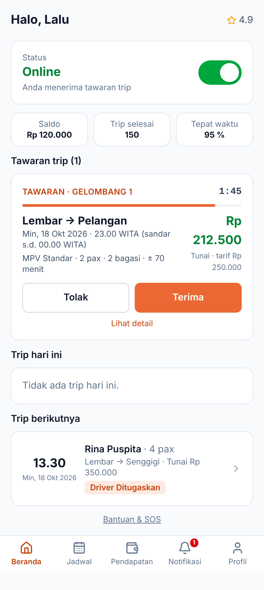
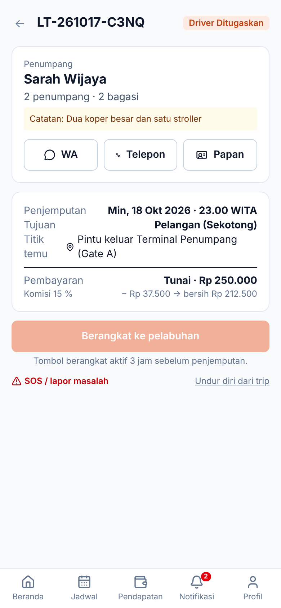
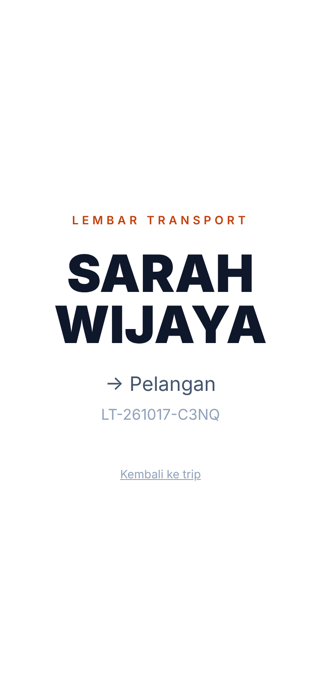
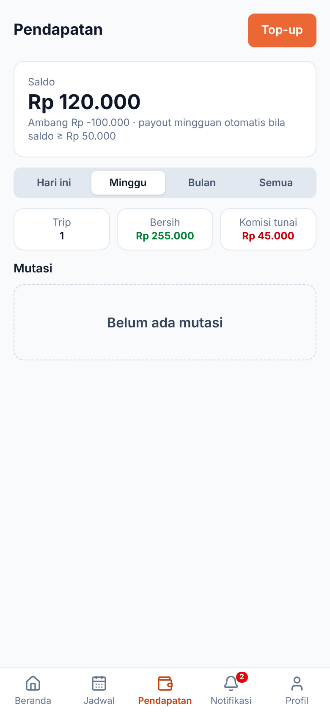
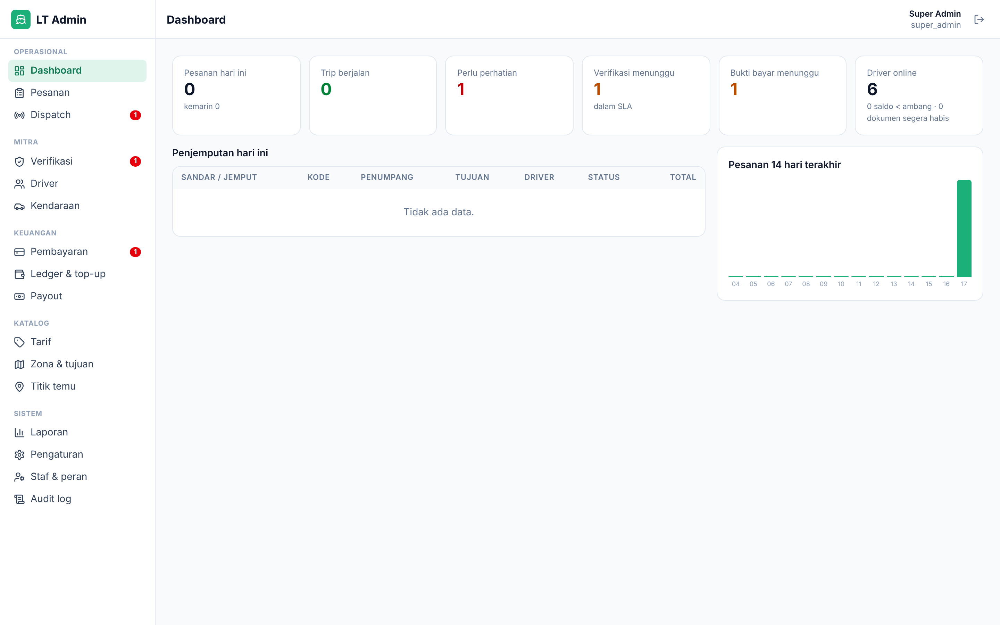
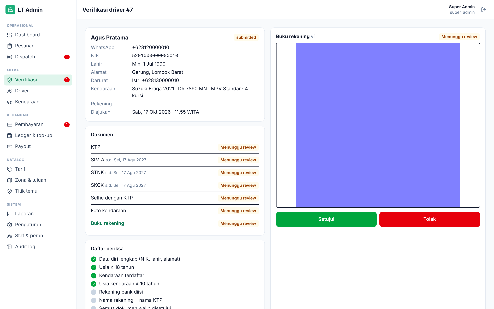

Lembar Transport Arsitektur Sistem & Antarmuka Pengguna
Platform pemesanan mobil + driver dari Pelabuhan Lembar, Lombok Barat: harga tetap per zona, driver terverifikasi, titik temu yang jelas. Dokumen ini merangkum cara sistem bekerja dan seperti apa tampilannya untuk tiga peran: Customer, Driver mitra, dan Admin/Ops.
3antarmuka (customer, driver PWA, admin)
129endpoint REST /api/v1
42tabel MySQL (24 domain + sistem)
32 + 3feature test Pest + alur e2e Playwright
Customer
Pesan dalam 5 langkah
Pilih tujuan → kelas kendaraan (harga terkunci 30 menit) → data kapal feri → kontak via OTP WhatsApp → bayar tunai/transfer. Tiket menampilkan status langsung, driver, titik temu, dan tombol Kapal sudah sandar. Dua bahasa (ID/EN).
Driver
PWA di ponsel
Pendaftaran + unggah dokumen, tawaran trip dengan hitung mundur (first-accept-wins), status trip sekali ketuk, papan nama, catat tunai, saldo/komisi, top-up, dan antrean aksi offline bila sinyal hilang.
Gambar 1 — Arsitektur tingkat tinggi. Next.js melayani tiga area UI dan bertindak sebagai BFF (token di cookie httpOnly, semua panggilan browser lewat /api/proxy/*). Laravel menyediakan REST API, domain services, scheduler, dan queue; MySQL 8 menyimpan data, Redis untuk cache/sesi/antrean, berkas privat dengan URL bertanda tangan.
Arsitektur
Lapisan sistem dan tanggung jawabnya
Satu API, tiga antarmuka. Aturan bisnis tinggal di sisi server (app/Services) sehingga UI mana pun yang memanggilnya mendapat perilaku yang sama; frontend hanya menampilkan dan menjaga rute.
Browser / PWANext.js 15 App Router · Tailwind · next-intl (ID/EN) · service worker Serwist + IndexedDB untuk driver
→
BFF Next.js/api/auth/session menyimpan token Sanctum di cookie httpOnly; /api/proxy/* meneruskan permintaan dengan header Bearer; middleware.ts menjaga /driver, /admin, /akun
→
Laravel APISanctum (ability per peran), spatie/permission, Form Request, Resource role-aware, idempotency-key, rate limit per grup
→
Data & infraMySQL 8 (migrasi MySQL-compatible), Redis (cache, sesi, queue), disk privat + signed URL 5 menit, scheduler tiap menit
Domain services (Laravel) — satu kelas per aturan bisnis
Service
Tanggung jawab
QuoteService
Tarif aktif per zona/kelas pada waktu jemput, surcharge malam (22.00–06.00) & hari raya, pembulatan Rp 1.000, token harga 30 menit
OrderStateMachine
Transisi status yang sah (Lampiran C PRD), riwayat append-only, stempel waktu per tahap
DispatchEngine
Kelayakan driver, skor 40/20/20/20, gelombang 5 → 10 → semua, first-accept-wins dengan lockForUpdate, retry 30 menit, needs_attention
PaymentService
Metode yang diizinkan, instruksi transfer, bukti, konfirmasi/penolakan Finance, kedaluwarsa otomatis
TripService
Status trip, jangkar sandar, tunggu gratis 60 menit, no-show, client_timestamp dari antrean offline
Customer & driver: OTP 6 digit via WhatsApp (5 menit, 3 percobaan, 5/jam); token 30 hari, ability per peran.
Admin: email + kata sandi + TOTP; sesi 8 jam; peran super_admin, ops, verifier, finance dengan izin granular.
Tiket tamu dibuka dengan 4 digit terakhir nomor WA; nomor penumpang dibuka ke driver 24 jam sebelum jemput.
Pekerjaan terjadwal
Dispatch tick (gelombang, timeout, retry)
tiap menit
Kedaluwarsa bukti transfer
5 menit
Pengingat pra-kedatangan / H-1
10 menit / 20.00 WITA
Auto-complete trip
30 menit
Cek dokumen, purge data
harian
Payout mingguan
Senin 07.00
Model data inti (42 tabel)
Mitra: users, drivers, vehicles, dokumen berversi, rekening, hari libur. Pesanan:orders sebagai pusat, riwayat status, tawaran dispatch, rating, laporan masalah; katalog zona, lokasi, rute feri, kelas, tarif berlaku-mulai, surcharge, hari raya. Keuangan & platform: pembayaran, refund, ledger (saldo berjalan), top-up, payout, OTP, log notifikasi, pengaturan, audit. ERD lengkap: Gambar 10 PRD.
Alur bisnis
Siklus hidup pesanan dan dispatch otomatis
Setiap pesanan bergerak melalui mesin status yang ketat; dispatch berjalan di latar belakang dan Ops hanya turun tangan bila sistem menandai perlu perhatian.
Dirancang untuk wisatawan di atas kapal: ringan, dua bahasa, dan satu tujuan per layar. Semua tangkapan layar di dokumen ini diambil dari aplikasi yang berjalan dengan data demo.

Gambar 4 — Landing. Kartu pencarian (tujuan, tanggal & jam tiba WITA, penumpang, bagasi), harga populer per zona dari tarif aktif, tiga nilai jual, dan tautan pesan instan via QR di pelabuhan. Sakelar ID/EN di kanan atas.

Gambar 5 — Wizard, langkah Kendaraan. Setiap kelas menampilkan kapasitas, surcharge yang berlaku, dan total; kelas yang tidak muat dinonaktifkan dengan alasan. Harga dikunci 30 menit (hitung mundur) agar tidak berubah saat pengguna mengisi data kapal dan kontak.

Gambar 6 — Tiket. Kode pesanan, status real-time (polling), kartu driver dengan WhatsApp/telepon, titik temu dan papan nama, tombol Kapal sudah sandar (aktif 2 jam sebelum estimasi), tautan bayar/batal/rating. Tamu membuka tiket dengan 4 digit terakhir nomor WA.
Halaman lain Daftar harga, FAQ, kebijakan pembatalan, syarat, privasi, pembayaran (instruksi transfer + unggah bukti), pembatalan dengan preview biaya, rating, akun & riwayat.
Teknis Server component untuk SEO (harga, FAQ), client component untuk wizard/tiket; useApi polling; pesan di messages/id.json & en.json.
Aksesibilitas & mobile Target sentuh ≥ 44 px, kontras AA, tata letak satu kolom di ponsel, tanggal/jam selalu ditampilkan dalam WITA.
Antarmuka · Driver mitra (PWA)
Aplikasi ponsel yang tetap bekerja saat sinyal hilang
Dipasang dari browser (manifest + service worker), navigasi bawah lima menu, warna aksen oranye agar berbeda dari aplikasi customer. Semua aksi penting cukup satu ketukan besar.

Gambar 7 — Beranda. Sakelar online, saldo & ambang, tawaran dengan hitung mundur dan pendapatan bersih, trip hari ini / berikutnya.

Gambar 8 — Detail trip. Kontak penumpang, data kapal, komisi, satu tombol status per tahap, SOS dan undur diri.

Gambar 9 — Papan nama. Layar penuh nama penumpang untuk diperlihatkan di pintu keluar terminal.

Gambar 10 — Pendapatan. Saldo, ambang, trip & bersih per periode, mutasi ledger, tombol top-up dengan bukti.
Perjalanan driver
Daftar: OTP → data diri → kendaraan → rekening → 7 dokumen wajib (KTP, SIM A, STNK, SKCK, selfie, foto kendaraan, buku rekening) dengan tanggal kedaluwarsa → kirim. Status verifikasi menampilkan SLA 24 jam dan dokumen yang ditolak beserta alasannya.
Tawaran: muncul hanya saat online dan layak; 120 detik untuk menerima; yang kalah otomatis hilang.
Trip: Berangkat (aktif 3 jam sebelum jemput) → Tiba di titik temu → Penumpang naik → Selesai (tunai: isi jumlah, catatan bila beda).
Tunggu & no-show: timer dari jangkar sandar; no-show bisa diajukan setelah tenggang dan ≥ 3 upaya kontak, dikonfirmasi Ops.
Teknik di balik layar
Offline-first: ketukan status disimpan di IndexedDB dengan client_timestamp dan dikirim ulang berurutan saat online; server menandai sinkronisasi terlambat > 10 menit.
Service worker (Serwist): precache shell aplikasi, navigasi network-first; API tidak di-cache untuk penulisan.
Polling: tawaran tiap 10 detik, profil 30 detik; berhenti saat tab tidak terlihat.
Jadwal: kalender hari libur (tidak menerima tawaran) dan penanda hari bertrip; riwayat trip.
Keamanan: nomor penumpang disamarkan sampai 24 jam sebelum jemput; dokumen hanya lewat URL bertanda tangan 5 menit.
Antarmuka · Admin / Ops
Konsol operasional dengan navigasi sesuai izin
Sidebar menampilkan hanya menu yang diizinkan peran pengguna, lengkap dengan lencana jumlah pekerjaan (perlu perhatian, verifikasi menunggu, bukti bayar). Login wajib kata sandi, dengan TOTP opsional atau diwajibkan lewat pengaturan.

Gambar 11 — Dashboard. KPI hari ini (pesanan, trip berjalan, perlu perhatian, verifikasi & SLA, bukti bayar, driver online), penjemputan hari ini, tren 14 hari.

Gambar 12 — Verifikasi berdampingan. Data pemohon dan daftar periksa di kiri, pratinjau dokumen dengan setujui/tolak (kode alasan) di kanan; aktivasi hanya aktif bila semua syarat terpenuhi.
Gambar 14 — Assign manual. Kandidat diurutkan skor dengan alasan ketidaklayakan; driver tidak layak hanya bisa dipilih dengan alasan override yang tercatat di audit log.
Modul
Fungsi
Izin
Pesanan & Dispatch
Tabel + papan kanban per status, pesanan manual (telepon/walk-in) dengan override harga beralasan, papan perlu-perhatian, laporan SOS/kendala, driver online
orders.view/manage/assign
Verifikasi & Driver
Antrean dengan SLA, review dokumen, aktif/revisi/tolak, tangguhkan/aktifkan, catatan internal, daftarkan atas nama, kendaraan & kelas
http://localhost:3000 (EN: /en). Masuk dengan nomor WA apa pun; kode OTP ditampilkan di layar pada mode non-produksi.
Driver
/driver — nomor demo 08120000001…06 (aktif), …10 (menunggu verifikasi). Pendaftaran baru lewat /driver/masuk?daftar=1.
Admin
/admin/masuk — super@lembartransport.test, ops@…, verifier@…, finance@…; kata sandi password.
Batasan Fase 1 dan rencana lanjutan
Integrasi WhatsApp/SMS/email dan gateway pembayaran berjalan dalam mode stub yang siap diganti driver vendor; pelacakan GPS, antrean digital di pelabuhan, promo, dan perjalanan pulang-pergi dijadwalkan untuk Fase 2. Struktur kode (service per domain, resource role-aware, flag di pengaturan) dibuat agar penambahan tersebut tidak mengubah UI yang sudah ada.